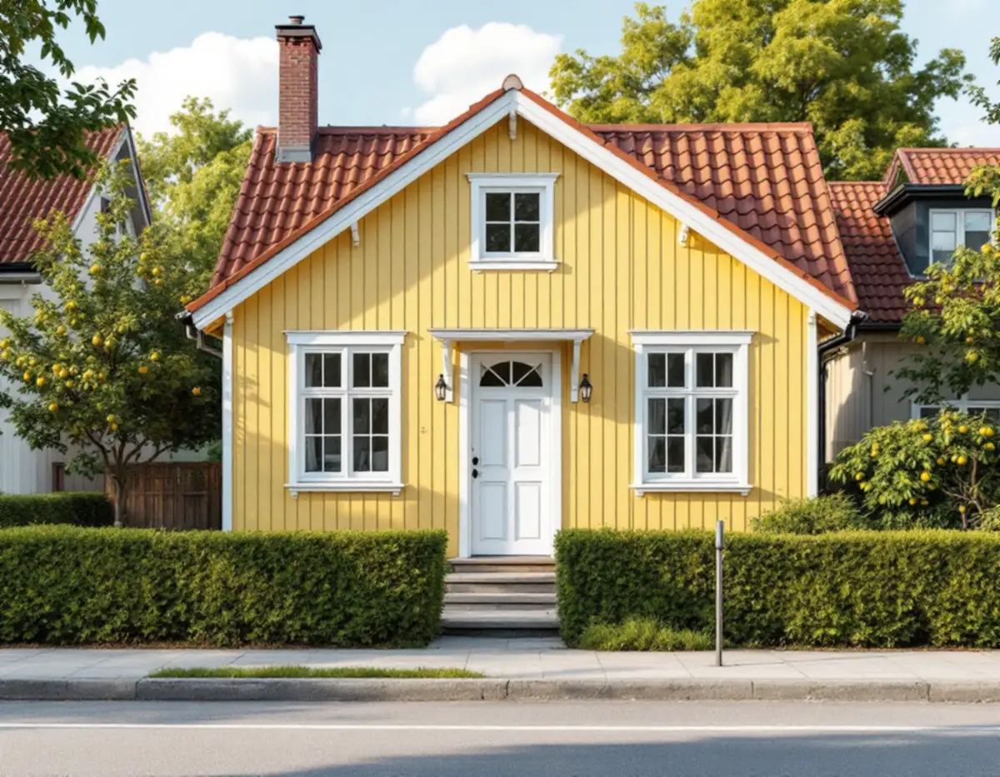
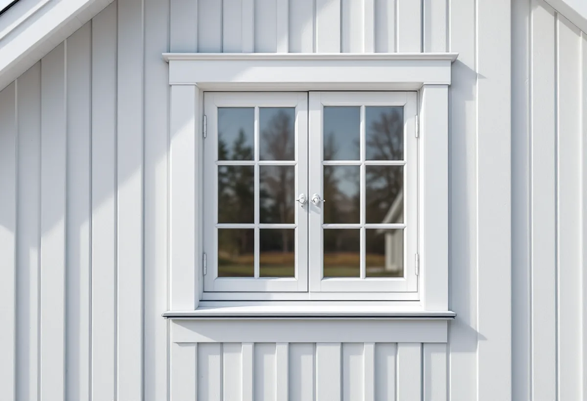
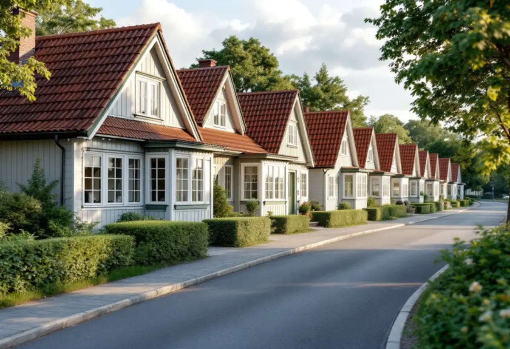

Platsbesök
Gratis besök där vi mäter fönstren och tittar på fasaden.

I Tallkrogen står närmare tusen småstugor byggda efter ett fåtal typritningar, med fönstren placerade i fasadens liv.
Beskriv jobbet kort.
Något blev fel. Kontrollera uppgifterna eller ring 08 12 410 276.
Vi tittar på jobbet på plats innan du får offert.
Du ser vad som ingår och vad det kostar.
Vi drar av ROT direkt och sköter ansökan.
Geal Entreprenad AB, Bromma. Org.nr 559303-7566.

Ett fönsterbyte där handlar om att behålla det läget och den indelningen. Geal Entreprenad AB byter fönster på småstugor, radhus och villor i Farsta och tar fram underlaget om bygglov behövs.
Stadsmuseets Stockholms spår om Tallkrogen berättar att utbyggnaden påbörjades 1933 och att området blev det största småstugeområdet i Söderort. Närmare 1 000 småstugor växte upp på den flacka åkermarken under det närmaste decenniet. Vid en första anblick kan det se ut som samma stuga upprepad i det oändliga, men området rymmer mer än tio olika hustyper, och byggnadsdelarna levererades färdiga från fabriken.
Stadens vägledning Varsam utveckling av småhus- och villaområden beskriver småstugeområdenas hus som enkla volymer, uteslutande i trä med fönster placerade i fasadliv, med stående träpanel med tunn lockläkt och tak av enkupigt eller tvåkupigt rött lertegel. Tallkrogen är i vägledningens tabell markerat som kulturhistoriskt värdefull miljö med ett äldre miljöprogram.

På stadens lista över ändringar av fönster finns just exemplet att ett fönster flyttas från placering i fasadliv till att bli indraget från fasadlivet. Det räknas som en ändring, liksom att ändra storlek, profiler, upphängning och indelning. För en småstuga där fönstren sitter i fasadens liv är det därför viktigt att det nya fönstret monteras i samma läge och inte flyttas in.
Vi mäter karm och foder på det gamla fönstret och beställer det nya efter de måtten. Bleck och foder sätts tillbaka så att stugans fasad ser ut som förut. Är fönstren friska nog att renoveras i stället kan det vara ett bättre val, och då går vi igenom båda alternativen på platsbesöket.
Enligt vägledningen samlade stadsbyggnadskontoret i slutet av 1970-talet alla typritningar från 1927 till 1957 i en sammanställning, för att den som ville ändra sin stuga skulle ha ett enkelt åtkomligt underlag. Staden skriver att äldre miljöprogram och typritningssamlingar kan beställas, och att de inte har juridisk status i bygglovsprövningen men är ett bra underlag för att förstå områdets karaktär.
Vi tar gärna hjälp av typritningen för din hustyp när vi ritar nya fönster. Ligger huset i ett område som är utpekat som särskilt värdefullt, eller är det blå- eller grönmarkerat på Stadsmuseets karta, behövs bygglov, och då är ritningen ett bra stöd i ansökan.
Farsta byggdes enligt Stockholms spår som Söderorts första ABC-stad, och i stadsdelens utkanter lades flera stora radhusområden. Stadens områdesfakta för 2025 räknar 3 806 småhus med äganderätt och 639 småhus med bostadsrätt i Farsta stadsdelsområde, varav 941 äganderätter i Tallkrogen och 327 i Svedmyra.
I ett radhusområde är det klokt att tänka på grannarna. Vägledningen råder att förändringar i sammanhållna grupper av villor, radhus och kedjehus utformas utifrån ett helhetsperspektiv. Byter du fönster i en länga ser vi gärna att de nya liknar grannarnas. Mer om tjänsten finns under fönsterbyte.
Gratis besök där vi mäter fönstren och tittar på fasaden.
Vi kontrollerar Stadsmuseets klassning för huset.
Nya fönster med samma läge, indelning och profiler.
Ritningar och beskrivning när bygglov krävs.
Fönstren monteras i fasadlivet och tätas.
Foder och bleck tillbaka och genomgång med dig.
I ett småhus räknar Skatteverket det som rotarbete att reparera eller byta ut fönster, att montera bullerglas och isolerglas och att byta fönsterbleck. Är bostaden yngre än fem år får arbetet bara återställa det ursprungliga skicket, och nytt material ska vara likvärdigt med det gamla.
Är radhuset en bostadsrätt ger Skatteverket inget rotavdrag för att byta fönster eller arbeta på deras utsida, men för arbete på insidan som du ansvarar för enligt stadgarna. Avdraget är högst 30 procent av arbetskostnaden och högst 50 000 kronor per person och år. Material och resor ger inget avdrag, och Geal drar avdraget direkt på fakturan.
Antal och storlek på fönstren, om de tillverkas efter mått, luftindelning och spröjs, foder och bleck, åtkomst och om bygglovsunderlag behövs. Efter ett gratis platsbesök får du ett skriftligt kostnadsförslag.
Byta eller renovera fönster.
Fönsterbyte i Stockholm →Takbyte, takbesiktning och plåtarbeten.
Takläggare i Farsta →Tallkrogens småstugor och villorna vid Magelungen.
Takrenovering i Farsta →Småstugor, kulturmiljö och gränser.
Attefallshus i Farsta →ABC-staden, radhus och asbest i våtrummet.
Badrumsrenovering i Farsta →En ny bostad i villan.
Byggföretag i Farsta →Tegel, puts, skivor och trädetaljer.
Fasadmålning i Farsta →Radhus, grupphus och fasadskivor.
Fasadrenovering i Farsta →Småstugorna i Svedmyra och Sköndal.
Fönsterrenovering i Farsta →Linoleum, plastgolv och klinker i småstugan.
Golvläggare i Farsta →Slipa trägolvet och gå igenom resultatet.
Golvslipning i Farsta →ABC-staden, radhus och villor.
Köksrenovering i Farsta →Småstugor, ädelputs och radhus i Söderort.
Målare i Farsta →Skorstensbeslag och plåttak i Farsta.
Plåtslagare i Farsta →Förråd, gäststuga och skärmtak vid småstugan.
Snickare i Farsta →Radhusen, längan och föreningen.
Takbyte i Farsta →Tapet i 1960-talets lägenheter.
Tapetsering i Farsta →Småstugorna och trädgårdssidan.
Tillbyggnad i Farsta →Småstugorna och typritningarna.
Totalrenovering i Farsta →Eller ring 08 12 410 276, mån–fre 08–17.
Beskriv jobbet kort.
Något blev fel. Kontrollera uppgifterna eller ring 08 12 410 276.